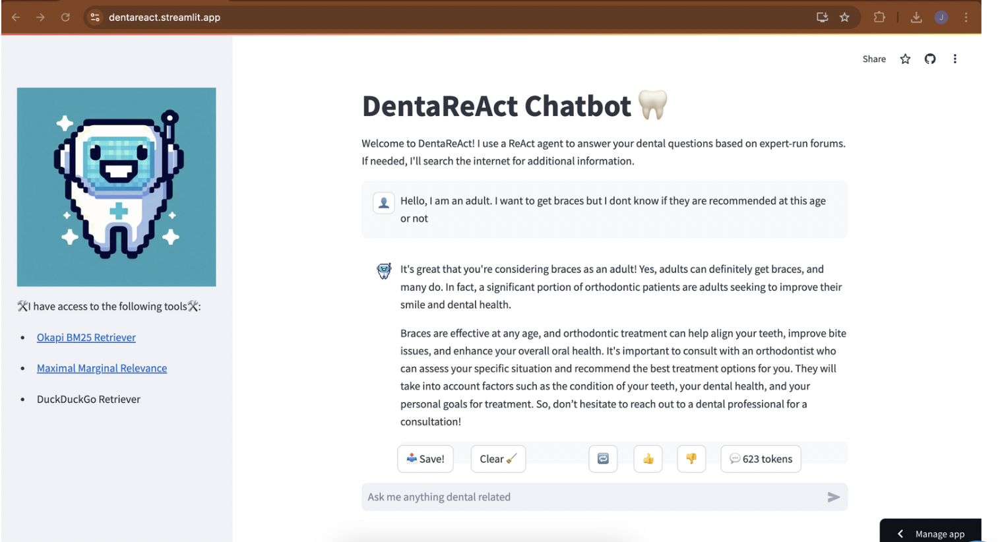

|
Ujin Jonathan Kang (강우진) I'm an undergraduate student at Yonsei University in South Korea, actively engaging in research within the field of AI/ML. I'm majoring in Computer Science, with a focus on exploring Large Language Models (LLMs) and their applications. I recently completed a research internship at a dental solution startup, where I evaluated and fine-tuned summarization models using PEFT-LoRa and developed a Dental ReAct agent + RAG chatbot. Additionally, I contributed to developing a Streamlit app that generates medical conversations and converts them into .wav files (TTS). |

|
Research InterestThe goal of my research is to apply NLP to advance healthcare, with a focus on improving medical dialogue summarization. So far, I have worked on fine-tuning large language models (LLMs) with bilingual medical conversation data and developing chatbots tailored to dental knowledge. Currently, I am focusing on the intersection of AI and neuroimaging, aiming to contribute to psychiatric research and brain imaging analysis. |
Projects

|
LLM-Trainer: Fine-tuning LLMs using PEFT-LoRa
This project focuses on fine-tuning large language models (LLMs) using a bilingual Korean and English medical dialogue dataset. The main task is to summarize medical dialogues, which will be used to generate clinical notes from medical conversations. By leveraging Parameter-Efficient Fine-Tuning (PEFT) with the LoRa method, the project aims to enhance the model's ability to accurately summarize medical information while optimizing computational efficiency. |
|  |
QA Dental Chatbot: Chatbot using ReAct agent and RAG
This dental chatbot was developed using a ReAct agent and RAG, which utilizes appropriate tools such as BM25 retriever, DDG, and MMR retriever from a database that has QA of Dentists and patients. The aim of this project is to assist patients with questions that do not require a full meeting with a dentist. This chatbot is designed for deployment on websites, providing 24-hour support to users. |